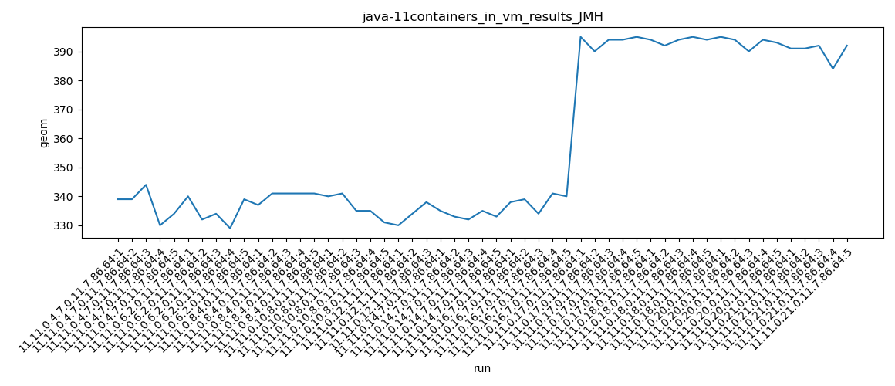
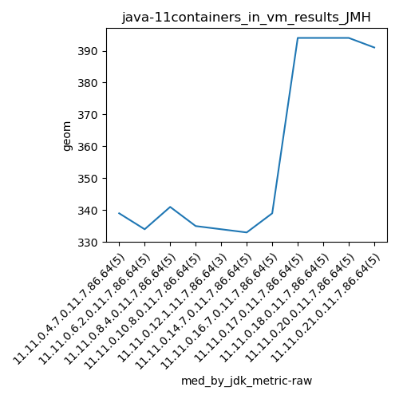

java-11 JMH
Context at bottom
/home/jvanek/git/benchmarks-in-nested-virtualisation-toolchain/final_results/containers_in_vm_results/containers_in_vm_results_JMH
java-11
JMH
containers_in_vm_results_JMH
final score
Expected number of java-11 JDKs: 11
1st avgmed_alljdks_metric:
/home/jvanek/git/benchmarks-in-nested-virtualisation-toolchain/final_results/result_processing.py /home/jvanek/git/benchmarks-in-nested-virtualisation-toolchain/final_results/containers_in_vm_results/containers_in_vm_results_JMH geom False
values: [339, 339, 344, 330, 334, 340, 332, 334, 329, 339, 337, 341, 341, 341, 341, 340, 341, 335, 335, 331, 330, 334, 338, 335, 333, 332, 335, 333, 338, 339, 334, 341, 340, 395, 390, 394, 394, 395, 394, 392, 394, 395, 394, 395, 394, 390, 394, 393, 391, 391, 392, 384, 392]

Expected number of iterations: 5
final number of values: 53 out of 55
Pass rate: 96.4%
values: (329, 395, 357.6981132075472, 341)

** accuracy from all jdks and runs
more is better
MIN: 329
MAX: 395
AVG: 357.6981132075472
MED: 341
Relative differences 1:
MIN-MAX: 17.0 %
MIN-AVG: 8.0 %
MIN-MED: 4.0 %
MAX-MIN: -20.0 %
MAX-AVG: -10.0 %
MAX-MED: -16.0 %
AVG-MED: -5.0 %
stored to java-11.properties. sort | uniq that!
2nd avgmed_by_jdk_metric:
values: [337.2, 334.8, 340.2, 336.4, 334.0, 333.6, 338.4, 393.6, 393.8, 393.2, 390.0]

values: [339, 334, 341, 335, 334, 333, 339, 394, 394, 394, 391]

values: (333.6, 393.8, 356.8363636363636, 338.4)
values: (333, 394, 357.09090909090907, 339)

** accuracy from all jdks where runs were avged
more is better
MIN: 333.6
MAX: 393.8
AVG: 356.8363636363636
MED: 338.4
Relative differences 1:
MIN-MAX: 15.0 %
MIN-AVG: 7.0 %
MIN-MED: 1.0 %
MAX-MIN: -18.0 %
MAX-AVG: -10.0 %
MAX-MED: -16.0 %
AVG-MED: -5.0 %
stored to java-11.properties. sort | uniq that!
** accuracy from all jdks where runs were medianed
more is better
MIN: 333
MAX: 394
AVG: 357.09090909090907
MED: 339
Relative differences 1:
MIN-MAX: 15.0 %
MIN-AVG: 7.0 %
MIN-MED: 2.0 %
MAX-MIN: -18.0 %
MAX-AVG: -10.0 %
MAX-MED: -16.0 %
AVG-MED: -5.0 %
stored to java-11.properties. sort | uniq that!
/home/jvanek/git/benchmarks-in-nested-virtualisation-toolchain/final_results/containers_in_vm_results/containers_in_vm_results_J2DBENCH
java-11
JMH
/home/jvanek/git/benchmarks-in-nested-virtualisation-toolchain/final_results/containers_in_vm_results/containers_in_vm_results_RADARGUNs3
java-11
JMH
/home/jvanek/git/benchmarks-in-nested-virtualisation-toolchain/final_results/containers_in_vm_results/containers_in_vm_results_SPECJBB
java-11
JMH
/home/jvanek/git/benchmarks-in-nested-virtualisation-toolchain/final_results/containers_in_vm_results/containers_in_vm_results_RADARGUNs1
java-11
JMH
/home/jvanek/git/benchmarks-in-nested-virtualisation-toolchain/final_results/containers_in_vm_results/containers_in_vm_results_DACAPO
java-11
JMH
pass rates:
containers_in_vm_results_JMH=96.4%
Context:
- containers_in_vm_results
- JMH